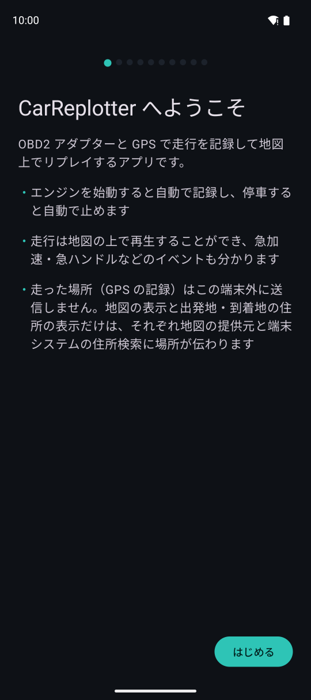
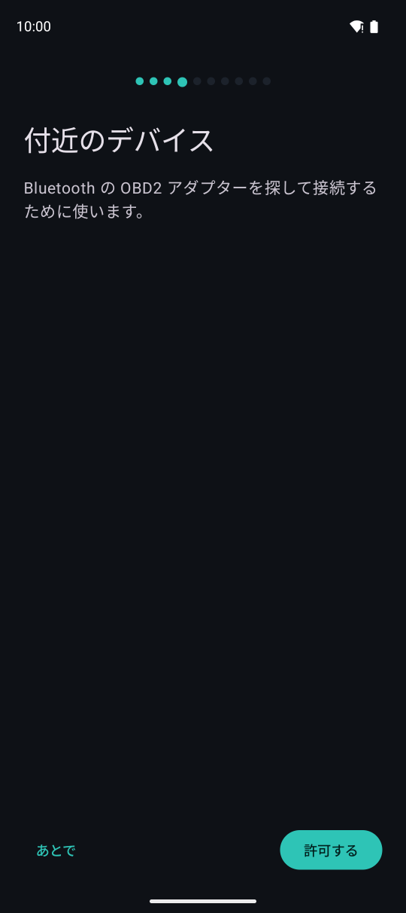
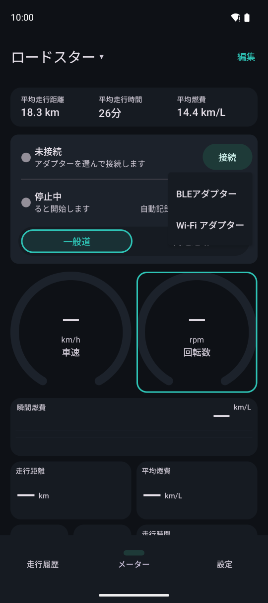

はじめに
OBD2 アダプターを車に装着し、アプリから一度接続すれば、あとは乗るたびに自動で記録されます。
必要なもの
- Android 16 以上のスマートフォンかタブレット端末
- ELM327 互換の OBD2 アダプター。おすすめは Bluetooth Low Energy（BLE）型です。車に近づくと自動で接続し記録を始めることができます
- Wi-Fi 型のアダプターも使えます（接続は手動となります）
- Bluetooth Classic だけのアダプター（BLE に対応していないもの）は使えません
- アダプターがなくても、GPS だけで走行を記録することもできます（回転数・燃費などは出ません）
このアプリは故障診断（故障コードの読み取り・消去など）はしません。運転の記録とリプレイ、メーター表示に絞っています。
最初の案内
はじめて起動したときに、言語や単位の設定、位置情報及び付近のデバイス（Bluetooth）の許可を順に求めます。許可は「あとで」にしてあとから設定することもできます。

アプリの説明です。走った場所の記録は端末の外に送りません。

付近のデバイスの許可を求めます。BLE のアダプターを探して接続するのに使います。
アダプターに接続する
アダプターを車の OBD2 端子（運転席の足元にあることが多い）に装着し、エンジンをかけてから接続します。

123- 1メーターの「接続」をタップします
- 2BLE のアダプターは「BLEアダプター」から、近くのアダプターを選びます
- 3Wi-Fi 型は「Wi-Fi アダプター」から、アダプターのアドレス（多くは 192.168.0.10:35000）を入力します。先に端末をアダプターの Wi-Fi につないでおきます
一度つないだ BLE のアダプターは覚えておき、次からはアダプターに近づいたとき（エンジンをかけたとき）に自動で接続します。車両は、車台番号（取れる車のみ）とアダプターで自動で判別します。